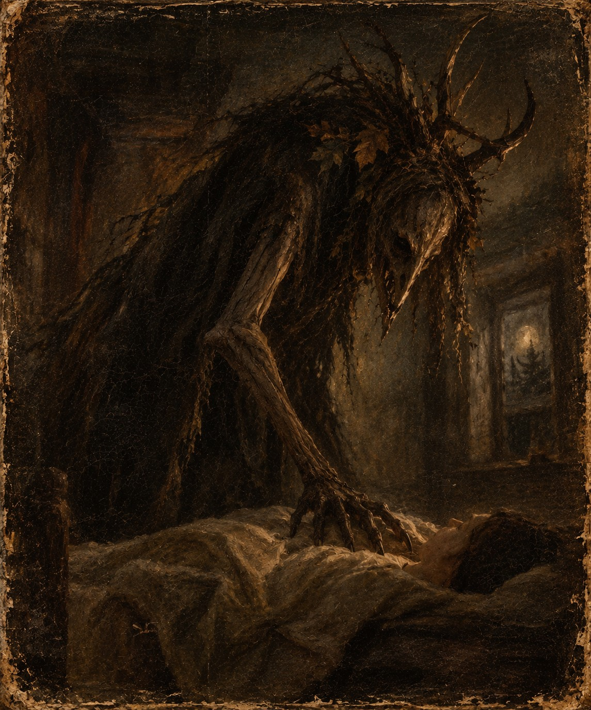

Aus dem Bestiarium des Samhain Zirkels

Der Nachtmahr, auch als Nachtmar, Mahr oder Alp bezeichnet, ist ein Wesen des europäischen Volksglaubens, dem seit Jahrhunderten die Fähigkeit zugeschrieben wird, schlafende Menschen heimzusuchen, ihre Träume zu beeinflussen und ihnen während der Nacht den Atem zu rauben. Besonders in den Überlieferungen des deutschsprachigen Raumes erscheint er als unheilvolle Gestalt, deren Anwesenheit mit bedrückenden Träumen, nächtlicher Bewegungsunfähigkeit und unerklärlichen Todesfällen in Verbindung gebracht wurde.
Die ältesten Vorstellungen vom Nachtmahr reichen weit in die vorchristliche Sagenwelt zurück. Seine genaue Herkunft ist ungeklärt, da sich die Beschreibungen regional unterscheiden und zahlreiche Überlieferungen erst Jahrhunderte nach ihrer Entstehung schriftlich festgehalten wurden.
In den Chroniken des Samhain Zirkels nimmt der Nachtmahr eine besondere Stellung ein. Dort wird er als eine Erscheinung beschrieben, die bereits zur Zeit der Gründung des Bundes im Schwarzwald bekannt gewesen sein soll.
Erscheinungsbild
Dem Nachtmahr wird keine unveränderliche körperliche Gestalt zugeschrieben. Während manche Überlieferungen ihn als schemenhaften Schatten beschreiben, erscheint er in anderen Berichten als ungewöhnlich großes, ausgemergeltes Wesen mit langen Gliedmaßen, einem gekrümmten Rücken und einem kaum erkennbaren Gesicht.
Seine Haut soll die Farbe verwitterten Holzes oder abgestorbener Pflanzen besitzen. Einige Darstellungen zeigen seinen Körper von Wurzeln, vertrocknetem Laub und dunklen Fasern bedeckt, während sich aus seinem Kopf knorrige, geweihartige Auswüchse erheben.
Besonders auffällig sind seine übermäßig langen Arme, deren schmale Finger in harten, klauenartigen Spitzen enden. Sein Körper erscheint häufig stark nach vorn gebeugt, sodass er sich nur mit Mühe aufrecht halten zu können scheint.
In mehreren Aufzeichnungen wird erwähnt, dass der Nachtmahr von einem tiefen, unregelmäßigen Atemgeräusch begleitet wird. Dieses soll häufig bereits zu hören sein, bevor das Wesen selbst sichtbar wird.
Sein Gesicht bleibt in den meisten Beschreibungen undeutlich. Augenzeugen berichten von tief liegenden Augenhöhlen und einem schmalen, länglichen Schädel, dessen Züge selbst aus nächster Nähe nur schwer zu erkennen seien.
Verhalten und Eigenschaften
Der Nachtmahr gilt als überwiegend nachtaktives Wesen, dessen Einfluss besonders während des Schlafes wirksam wird.
Nach volkstümlicher Vorstellung nähert er sich seinen Opfern zunächst unbemerkt und verharrt längere Zeit in deren unmittelbarer Umgebung. Seine Anwesenheit soll sich durch eine ungewöhnliche Kälte, leise Schritte oder das Gefühl bemerkbar machen, von einer unsichtbaren Gestalt beobachtet zu werden.
Im weiteren Verlauf treten häufig wiederkehrende Albträume auf, in denen die Betroffenen dunkle Räume, unbekannte Gestalten oder eine drohende Gefahr wahrnehmen.
Als charakteristisches Merkmal gilt die sogenannte Mahrbedrückung. Dabei empfinden die Schlafenden ein schweres Gewicht auf ihrer Brust und sind vorübergehend unfähig, sich zu bewegen oder um Hilfe zu rufen.
In der modernen Schlafforschung lassen sich solche Erlebnisse häufig durch Schlafparalyse erklären, bei der das Bewusstsein bereits erwacht ist, während die während des REM-Schlafes auftretende Muskelhemmung noch anhält.
Die historischen Überlieferungen deuten diese Erscheinung hingegen als unmittelbaren Angriff des Nachtmahrs.
Einigen Sagen zufolge verstärkt sich sein Einfluss mit jeder weiteren Heimsuchung. Die Betroffenen leiden zunehmend unter Schlaflosigkeit, Erschöpfung und einer anhaltenden Furcht vor dem Einschlafen.
In besonders düsteren Berichten wird behauptet, dass der Nachtmahr seine Opfer so lange heimsuche, bis diese schließlich nicht mehr aus ihrem Schlaf erwachen.
Herkunft und Überlieferungen im Schwarzwald
Der Schwarzwald nimmt innerhalb der Überlieferungen des Samhain Zirkels eine besondere Stellung ein.
In den ältesten erhaltenen Chroniken aus dem Jahre 1748 finden sich Berichte über mehrere unerklärliche nächtliche Todesfälle in einem abgelegenen Waldgebiet. Die Betroffenen sollen zuvor von ähnlichen Träumen berichtet haben, in denen eine dunkle Gestalt an ihren Betten erschien.
Nach den Aufzeichnungen wurden die Erscheinungen zunächst als gewöhnliche Albträume betrachtet. Erst als mehrere Bewohner unabhängig voneinander dieselben Beobachtungen schilderten, begann man, einen Zusammenhang zwischen den Vorfällen zu vermuten.
Die Berichte erwähnen außerdem ungewöhnliche Geräusche in verschlossenen Räumen, unerklärliche Bewegungen von Gegenständen und das Auftreten einer fremdartigen Gestalt, deren Körperbau keiner bekannten menschlichen Erscheinung entsprach.
Ob es sich bei diesen Ereignissen tatsächlich um die Begegnung mit einem Nachtmahr gehandelt haben soll, bleibt ungeklärt.
Bemerkenswert ist jedoch, dass die Gründung des Samhain Zirkels zeitlich mit diesen Vorfällen zusammenfällt.
Einige spätere Chronisten vermuteten deshalb, dass der ursprüngliche Bund gegründet wurde, um das Wissen über diese Erscheinung zu bewahren und eine erneute Heimsuchung zu verhindern.
Verbindung zum Samhain Zirkel
Innerhalb der Überlieferungen des Zirkels wird der Nachtmahr nicht ausschließlich als gewöhnlicher Traumgeist betrachtet.
Ein beschädigtes Dokument aus dem achtzehnten Jahrhundert beschreibt ihn als eine Erscheinung, deren Einfluss zunächst auf den Schlaf beschränkt sei, die jedoch unter bestimmten Umständen auch außerhalb der Traumwelt wahrgenommen werden könne.
Die betreffende Aufzeichnung enthält eine Warnung:
„Wo er einmal Einlass gefunden hat, wird der Schlaf selbst zum Wege seiner Wiederkehr.“
Ein weiterer Bericht deutet darauf hin, dass die jährlichen Zusammenkünfte des Zirkels ursprünglich dem Zweck dienten, eine erneute Ausbreitung der Erscheinungen zu verhindern.
Welche Bedeutung dabei den alten Zeichen, den überlieferten Schutzbräuchen und dem gemeinsamen Schwur der Mitglieder zukam, lässt sich aus den erhaltenen Dokumenten nicht eindeutig bestimmen.
Besonders auffällig ist die wiederkehrende Erwähnung einer Versammlung, bei der sämtliche Mitglieder anwesend sein sollten.
Nach einer Überlieferung aus dem Jahre 1748 soll der Einfluss des Nachtmahrs während einer solchen Zusammenkunft vorübergehend nachgelassen haben.
Andere Berichte behaupten hingegen, dass gerade die Anwesenheit des versammelten Zirkels die Aufmerksamkeit des Wesens auf sich gezogen habe.
Dieser Widerspruch konnte bislang nicht aufgeklärt werden.
Schutzmaßnahmen
In der europäischen Volksüberlieferung existieren zahlreiche Bräuche, die vor den nächtlichen Heimsuchungen eines Nachtmahrs schützen sollten.
Dazu gehören insbesondere das Anbringen von Eisen über dem Bett, das Aufhängen bestimmter Kräuter und das Zeichnen von Schutzsymbolen an Türen und Fenstern.
Auch dem Beifuß, dem Wacholder und verschiedenen dornigen Pflanzen wurden in regionalen Überlieferungen schützende Eigenschaften zugeschrieben.
In den Chroniken des Samhain Zirkels finden sich Hinweise auf ähnliche Maßnahmen. Besonders häufig werden getrocknete Kräuterbündel, eiserne Gegenstände und das alte Zeichen des Bundes erwähnt.
Ob diese Bräuche ursprünglich zur Abwehr des Nachtmahrs dienten oder lediglich Bestandteil allgemeiner Schutzrituale waren, ist nicht überliefert.
Die ältesten Dokumente weisen jedoch darauf hin, dass die Wirksamkeit einzelner Maßnahmen als begrenzt angesehen wurde.
Demnach galt nicht das bloße Vorhandensein eines Schutzzeichens als entscheidend, sondern die Einhaltung eines Schwures, dessen vollständiger Wortlaut heute nicht mehr bekannt ist.
Das Erwachen im Jahre 2026
In den jüngsten Aufzeichnungen des Samhain Zirkels werden erneut Ereignisse beschrieben, die auffällige Ähnlichkeiten mit den Berichten aus dem Jahre 1748 aufweisen.
Mehrere Mitglieder sollen unabhängig voneinander über wiederkehrende Albträume, nächtliche Bewegungsunfähigkeit und die Wahrnehmung einer dunklen Gestalt berichtet haben.
Gleichzeitig wurden im alten Versammlungshaus ungewöhnliche Geräusche und Erscheinungen beobachtet, die sich mit den überlieferten Beschreibungen des Nachtmahrs in Verbindung bringen lassen.
Besondere Aufmerksamkeit erregte dabei die angebliche Sichtung einer hochgewachsenen, stark gebeugten Gestalt im oberen Stockwerk des Hauses während der Samhainnacht.
Ob diese Erscheinung tatsächlich mit den historischen Berichten in Zusammenhang steht, ist Gegenstand weiterer Untersuchungen innerhalb des Zirkels.
Die jüngsten Ereignisse werfen insbesondere die Frage auf, ob der Nachtmahr ausschließlich während des Schlafes wirksam werden kann oder ob die alten Überlieferungen lediglich eine frühe Phase seiner Erscheinung beschreiben.
Eine abschließende Beurteilung liegt bislang nicht vor.
Anmerkung aus den Chroniken des Zirkels
Die vorliegenden Beschreibungen beruhen auf historischen Überlieferungen, mündlichen Berichten und den erhaltenen Aufzeichnungen des Samhain Zirkels. Eine eindeutige Bestimmung des Wesens ist aufgrund der widersprüchlichen Quellenlage nicht möglich.
In einer der ältesten Chroniken findet sich jedoch eine Warnung, die in nahezu unveränderter Form über mehrere Generationen weitergegeben wurde:
„Hütet euch vor der Nacht, in der ihr nicht mehr schlafen müsst, um ihn zu sehen.“
Archiv des Samhain Zirkels – Bestiarium, Eintrag I: Der Nachtmahr
Hinweis: Die allgemeinen Angaben zum Nachtmahr und zur Schlafparalyse orientieren sich an tatsächlichen volkskundlichen Vorstellungen beziehungsweise medizinischen Erkenntnissen. Die Schwarzwald-Ereignisse von 1748, die Chroniken und die Verbindung zum Samhain Zirkel sind Teil unserer erfundenen Geschichte.